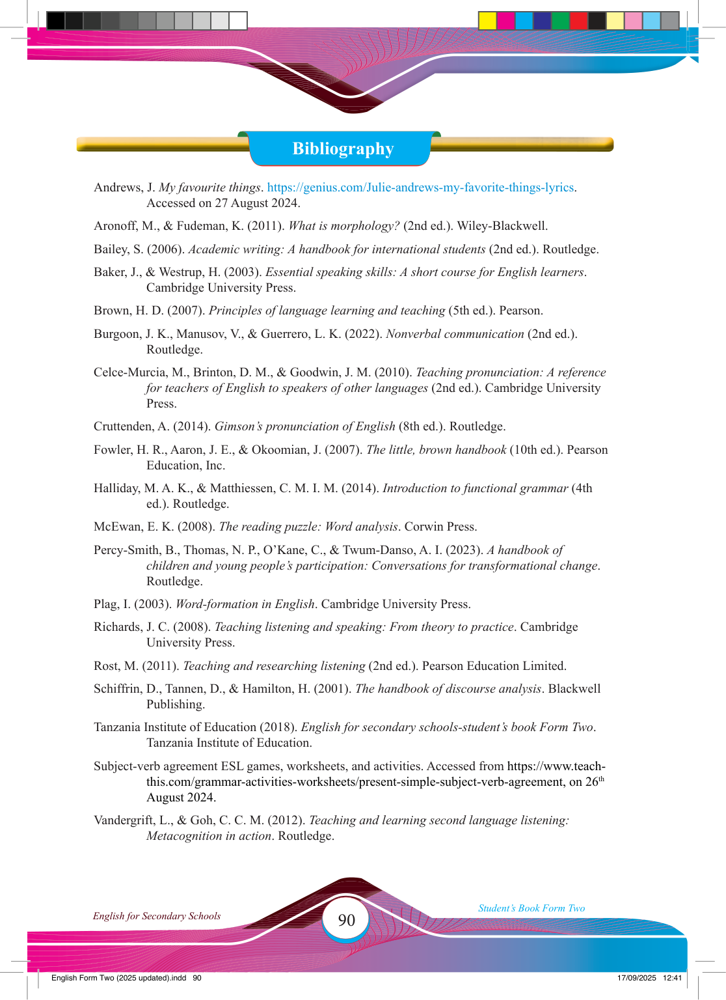

90
Student’s Book Form Two
English for Secondary Schools
Bibliography
Andrews, J. My favourite things. https://genius.com/Julie-andrews-my-favorite-things-lyrics.
Accessed on 27 August 2024.
Aronoff, M., & Fudeman, K. (2011). What is morphology? (2nd ed.). Wiley-Blackwell.
Bailey, S. (2006). Academic writing: A handbook for international students (2nd ed.). Routledge.
Baker, J., & Westrup, H. (2003). Essential speaking skills: A short course for English learners.
Cambridge University Press.
Brown, H. D. (2007). Principles of language learning and teaching (5th ed.). Pearson.
Burgoon, J. K., Manusov, V., & Guerrero, L. K. (2022). Nonverbal communication (2nd ed.).
Routledge.
Celce-Murcia, M., Brinton, D. M., & Goodwin, J. M. (2010). Teaching pronunciation: A reference for teachers of English to speakers of other languages (2nd ed.). Cambridge University
Press.
Cruttenden, A. (2014). Gimson’s pronunciation of English (8th ed.). Routledge.
Fowler, H. R., Aaron, J. E., & Okoomian, J. (2007). The little, brown handbook (10th ed.). Pearson
Education, Inc.
Halliday, M. A. K., & Matthiessen, C. M. I. M. (2014). Introduction to functional grammar (4th ed.). Routledge.
McEwan, E. K. (2008). The reading puzzle: Word analysis. Corwin Press.
Percy-Smith, B., Thomas, N. P., O’Kane, C., & Twum-Danso, A. I. (2023). A handbook of children and young people’s participation: Conversations for transformational change.
Routledge.
Plag, I. (2003). Word-formation in English. Cambridge University Press.
Richards, J. C. (2008). Teaching listening and speaking: From theory to practice. Cambridge
University Press.
Rost, M. (2011). Teaching and researching listening (2nd ed.). Pearson Education Limited.
Schiffrin, D., Tannen, D., & Hamilton, H. (2001). The handbook of discourse analysis. Blackwell
Publishing.
Tanzania Institute of Education (2018). English for secondary schools-student’s book Form Two.
Tanzania Institute of Education.
Subject-verb agreement ESL games, worksheets, and activities. Accessed from https://www.teach- this.com/grammar-activities-worksheets/present-simple-subject-verb-agreement, on 26th
August 2024.
Vandergrift, L., & Goh, C. C. M. (2012). Teaching and learning second language listening:
Metacognition in action. Routledge.
17/09/2025 12:41